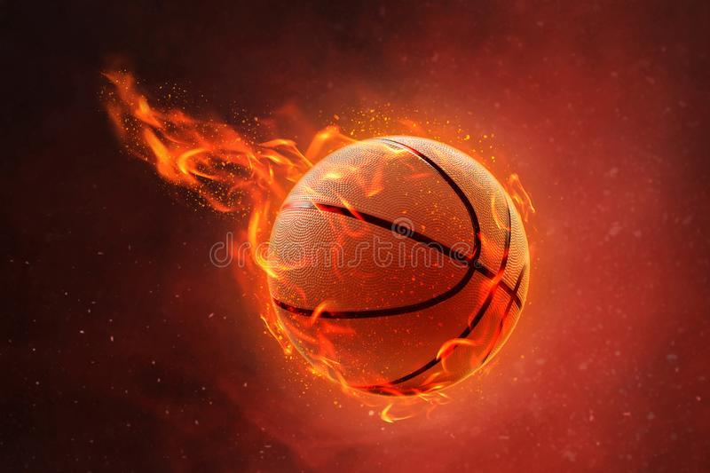

Basketball was invented by a Canadian-American gym teacher, James Naismith in Springfield, Massachuetts, United States of America. The first game was played in Toronto, Ontario, Canada between the Toronto Huskies and New York Knickerbockers on November 1, 1946.I started playing basketball since I was 7 years old. Last year I got selected for my school team.
Some of the earliest archeological evidence for scientific reasoning is tens of thousands of years old. The earliest written records in the history of science come from Ancient Egypt and Mesopotamia in around 3000 to 1200 BCE.In all the three categories of science, my favorite is biology. Science is not a hobby but i love to study science as it is very interesting and everything around us is Science!